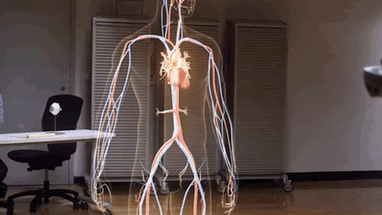
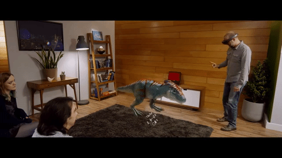
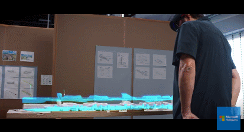

Using Microsoft HoloLens, 24,000+ service technicians of Thyssenkrupp will be able to visualize and identify problems with elevators ahead of a job, and have remote, hands-free access to technical and expert information when onsite – all resulting in significant savings in time and stress.

Medical students are using the augmented reality headset to learn more about human anatomy, from looking at specific types of fractures to examining the intricacies of the heart.

Microsoft’s HoloLens will let you interact with holograms. Actiongram is an AR movie maker that allows users to shoot videos of people interacting with holograms.

Microsoft HoloLens is a game-changing headset for mixed reality. Developers are already doing amazing things with it. This gif shows how this device can make life easier for architects.